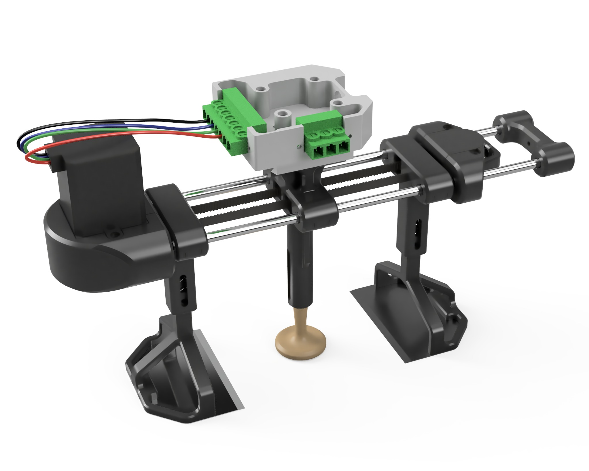
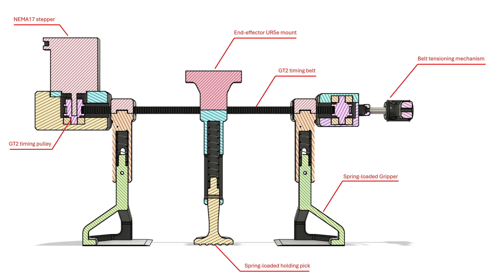
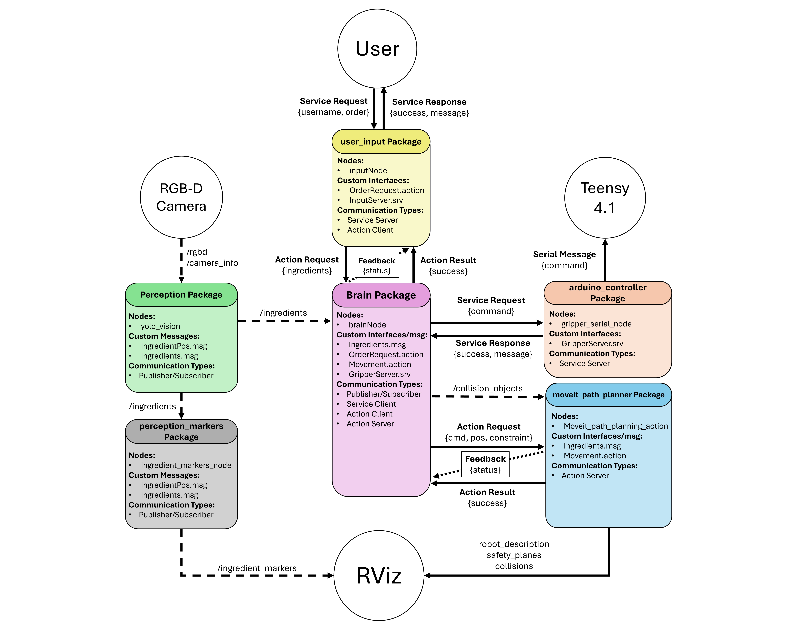
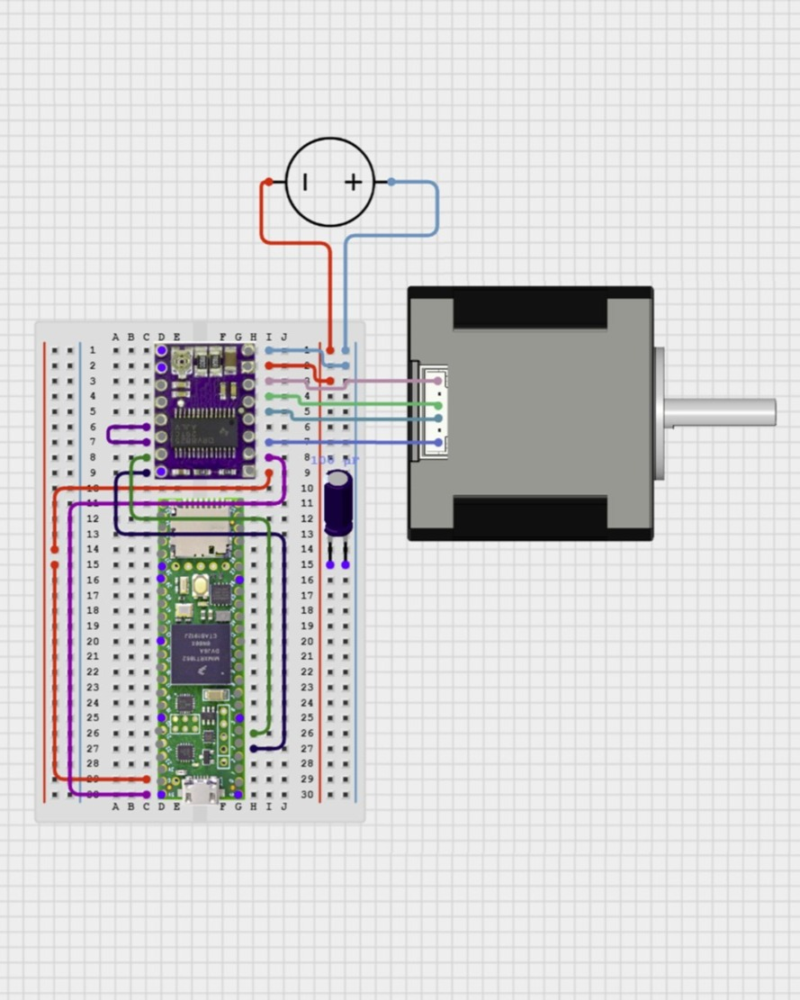
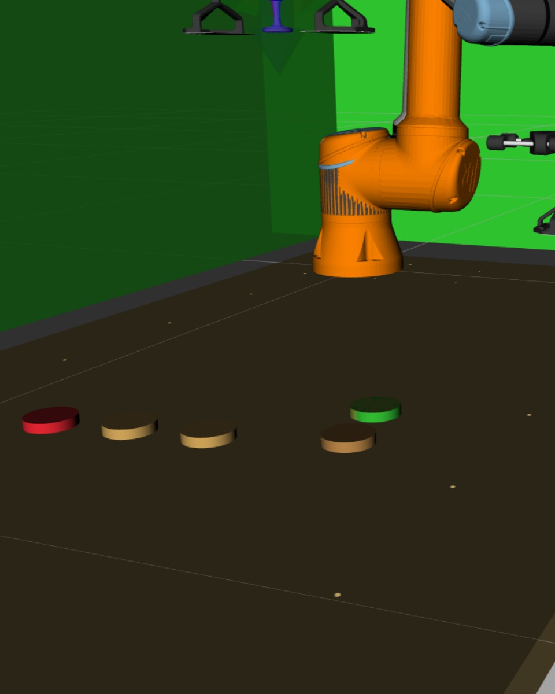
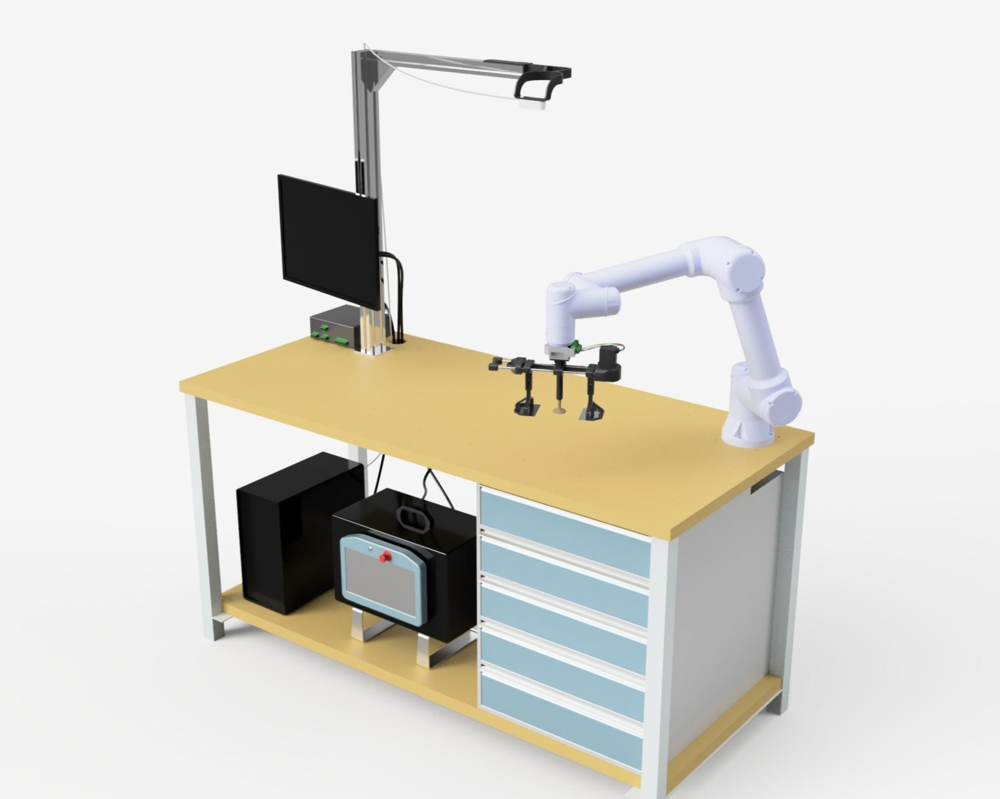
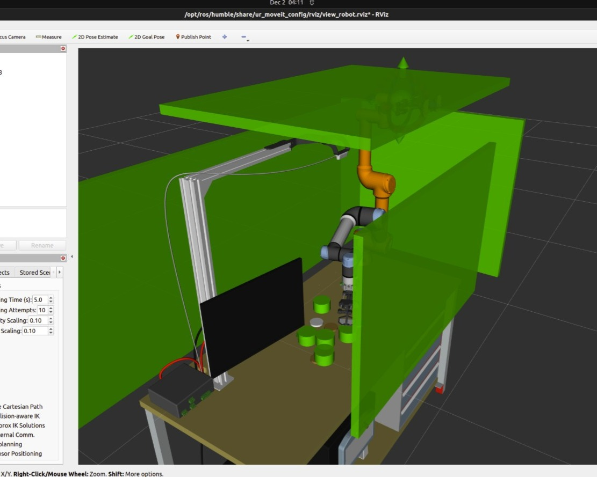
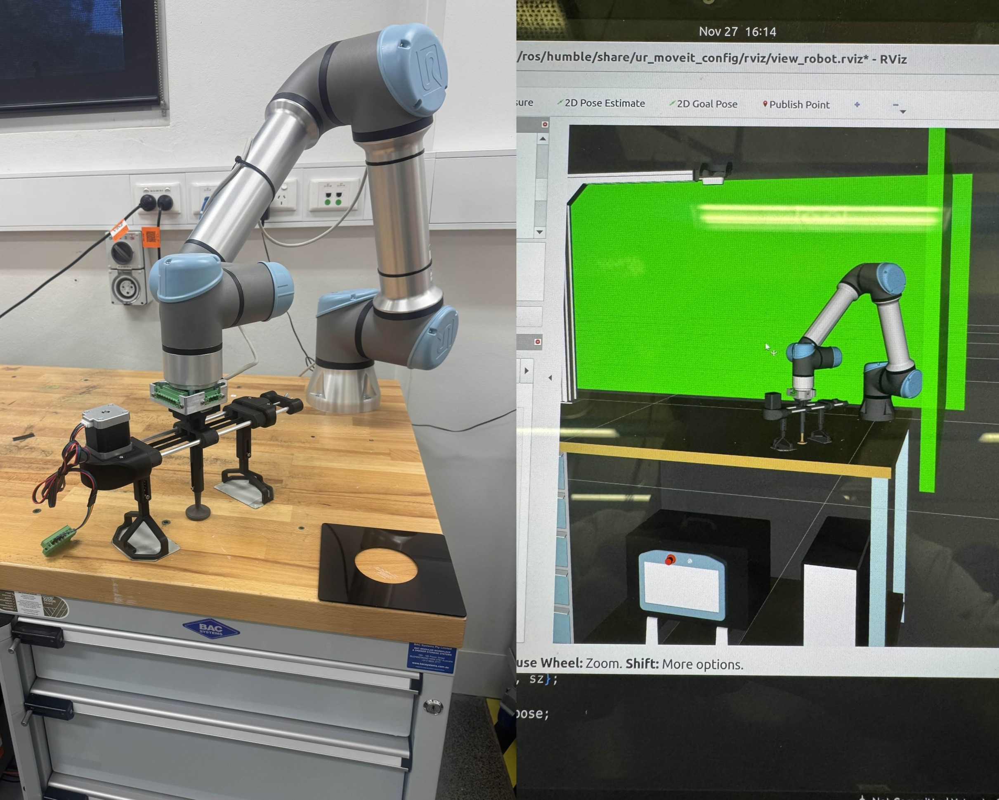
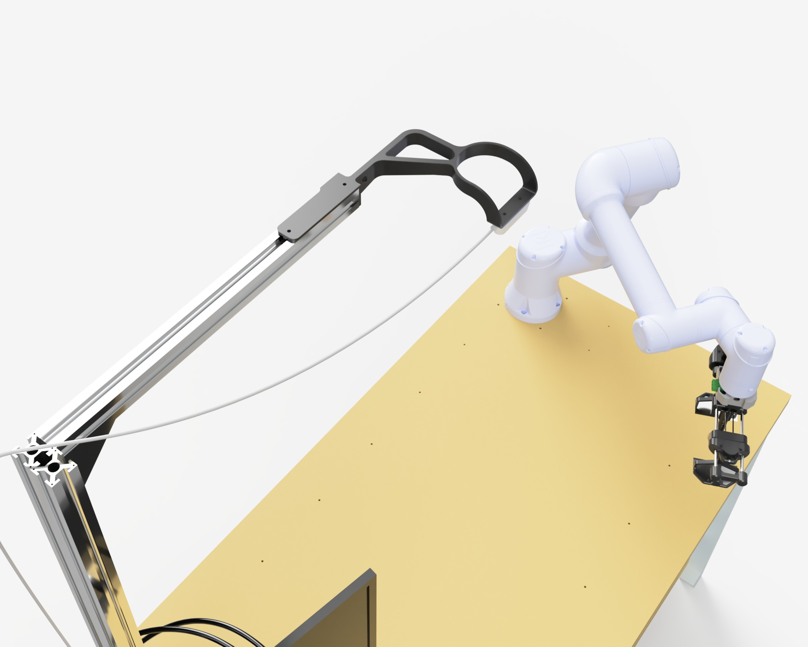

Designed and deployed a ROS2-based 6-DOF robotic system, integrating custom end-effector design, YOLO computer vision, and real-time visualisation
Fast-food burger assembly is labour-intensive, costly, and inconsistent. Existing automation solutions often rely on complex, multi-robot assembly lines with specialised tooling, making them expensive and inflexible for many restaurants. A single-robot burger assembly system using a UR5e manipulator can be used as a solution, integrating YOLO-based vision, ROS2, 6-DOF path planning with MoveIt, and a custom universal end-effector. The system detects, localises, and stacks ingredients autonomously while visualising motion and safety constraints in RViz, providing a flexible and cost-effective automation alternative.
Responsible for all CAD, manufacturing, and assembly for the project, including feasibility analysis and iterative development of the end-effector solution. Designed and fabricated the complete mechanical system, and modelled the full UR5e workspace to enable realistic visualisation in RViz. Developed a workspace-centred RGB-D camera mount to support accurate frame transformations for the computer vision team. On the controls side, implemented all Arduino software for end-effector state handling and built the pre-integration ROS2 packages responsible for serial communication with the controller. Also created a visualisation package to display detected food items in RViz, improving usability and supporting object avoidance capabilities.
A custom end effector was designed to allow a single UR5e manipulator to handle a wide range of burger ingredients, many of which were soft, flexible, and prone to deformation. Multiple concepts were evaluated in CAD before converging on a timing-belt driven gripper with guided jaws and spring-loaded suspension to improve reliability and compliance while handling delicate or uneven items. Spatula-style grippers were incorporated to slide beneath ingredients while a central pick stabilises the stack during release. The mechanism was prototyped using 3D-printed components and off-the-shelf hardware to enable rapid iteration.


End-effector control was implemented on a Teensy 4.1 microcontroller driving a NEMA17 stepper motor via a DRV8825 driver. Custom firmware executes gripper actions from serial commands sent by ROS2, allowing the central control node to synchronise grasping with MoveIt motion planning. A ROS2 interface package was developed to manage communication with the controller, alongside a visualisation package that displays detected ingredients as markers in RViz to support debugging and collision-aware planning.



The full UR5e workspace was modelled in CAD and integrated into a URDF/Xacro description for realistic visualisation in RViz, enabling accurate motion planning and collision checking. As part of this system modelling, a workspace-centred RGB-D camera mount was designed to provide a stable bird’s-eye view of the assembly area, improving ingredient detection and simplifying coordinate transformations between the perception system and the robot.




This project highlighted the challenges of designing a robot to handle variable, delicate ingredients and the need for iterative testing and careful mechanism design. Equally important, it taught me how to work within client requirements, simulating a real industry scenario where the solution must meet specified constraints and objectives, reinforcing the value of balancing innovation with practical, client-driven expectations.